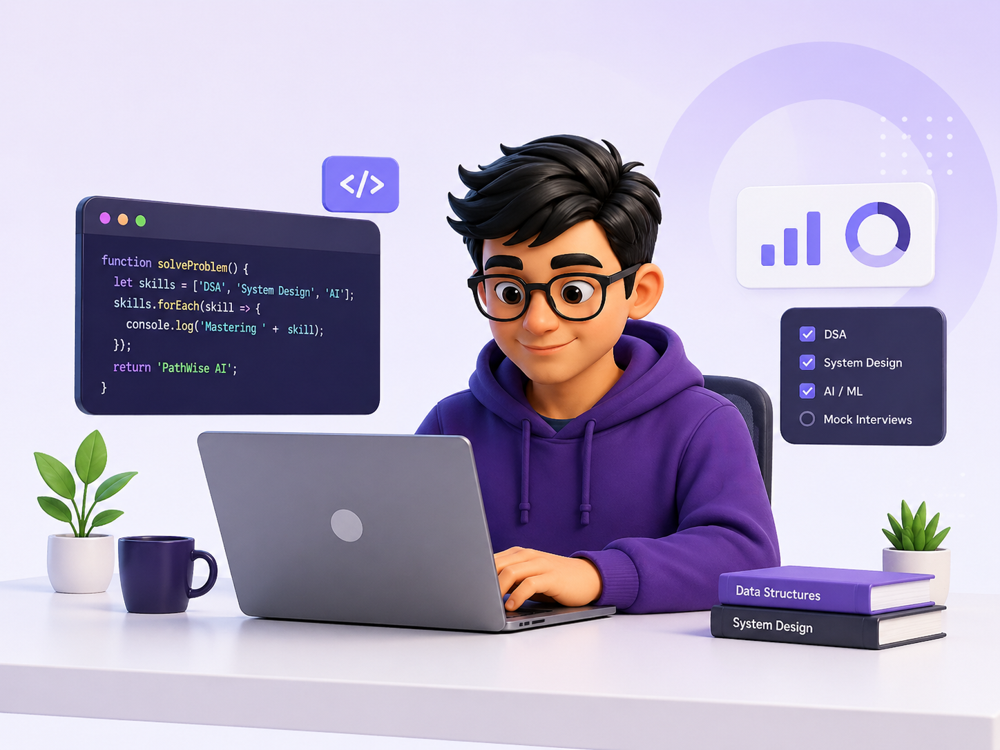

Tell me about yourself and the kind of role you want to grow into.
AI-Powered Career & Life Companion
PathWise AI
Personalized Career & Life Companion
An AI-powered Career & Wellbeing Companion Platform that helps students and job seekers prepare for interviews, build stronger resumes, discover suitable career paths, and manage stress with guided support.

AI Interview Practice
Ready to begin
Voice mode works best in Chromium-based browsers.
Ready when you are
Waiting for answer
Confidence
0%
Clarity
0%
Relevance
0%
Tip: Use a specific example and explain the result you achieved.
AI Job Priority & Support Matching
PathWise AI checks the user’s career urgency, stress level, support level, sleep condition, and current mood to estimate who needs faster job-finding support. Higher priority users can be guided first for resume improvement, interview preparation, job matching, and company connection support.
Current Emotional State
Good
A simple emotional check-in to keep career preparation manageable and supportive.
Your Job Support Advice
Based on your current inputs, PathWise AI can guide you with career planning, resume improvement, interview preparation, and job-matching priority.
Fuzzy Risk Assessment Result
READY
Choose your factors and run the fuzzy assessment to estimate job-support priority.
Risk Score
--
Category
Waiting
Queue
Run assessment
Estimated response
--
Position
--
Suggested action
Choose factors first
See AI Reasoning
Stress: 0.6
Urgency: 0.9
Support: 0.5
Social Isolation: 0.5
Sleep risk: 0.3
Mood risk: 0.5
IoT Risk: 0.3
Rule: IF stress HIGH AND urgency HIGH THEN risk HIGH
Fuzzy: min(0.6,0.9)=0.6
Final: max(0.6,0.5)=0.6
Category: MEDIUM
Queue: PRIORITY SUPPORT
Estimated Response: 12-24 hrs
Suggested Action: Guided support
Based on the given stress, urgency, support, social isolation, sleep, mood, and IoT signals, the system explains why this queue was selected.
high_risk(Person,Degree):-
stress(Person,S),
urgency(Person,U),
Degree is min(S,U).
final_risk(Person,FinalDegree):-
high_risk(Person,D1),
support_risk(Person,D2),
isolation_risk(Person,D3),
sleep_risk(Person,D4),
mood_risk(Person,D5),
FinalDegree is max(D1,max(D2,max(D3,max(D4,D5)))).- Take short breaks and breathe
- Stay active and drink water
- Talk to someone you trust
- Focus on progress, not perfection
Program
CAI20103 fuzzy logic, agents, minimax, IoT, XAI, ethics
Output
Editable SWISH-style Prolog output with local save support
Type a Prolog query and press Run. Suggested report queries: - multi_agent_report(zarul). - strategy_report(pinky). - explain_decision(ryan). - iot_report(ryan). - final_summary(ryan). Use File -> Save to keep your latest code in this browser.
AI Resume Builder
Enter academic, personal, and career details to generate a polished CV preview that can be printed or saved as a PDF-style resume.
Zarul H.
Front End Developer
zarul@example.com • +60 12-345 6789 • Kuala Lumpur, Malaysia • linkedin.com/in/zarulh
Professional Summary
Motivated front-end developer with strong foundations in HTML, CSS, JavaScript, and user-focused product design.
Education
BS in Computer Science
Management and Science University (MSU)
Skills
Work Experience
Intern Web Developer at XYZ Tech
Projects
PathWise AI - Career companion hackathon demo
Certifications
Google UX Design
Achievements
Hackathon participant
Career Recommendation
This recommender goes beyond technical skills by also checking interests, university background, personality, stress tolerance, work style, communication, creativity, leadership, and comfort with data.
Uses and Applications
- Students practice early, explore career options, and build confidence.
- Job seekers improve resumes, interview readiness, and application quality.
- Graduates discover roles that fit their strengths and growth direction.
- Universities can use it as an employability support prototype.
Implementation Level
Prototype Includes
- Multi-role interview interface with live scoring feedback.
- Mock interview flow with text, voice, and session-end reporting.
- Live resume builder with print-ready CV preview.
- Profile-based career recommendation engine.
Future Improvements
- Real-time job and internship integration.
- Voice and video analysis for deeper communication insights.
- Smarter stress detection and adaptive wellbeing guidance.
Novelty and Inventiveness
- Combines career development with positive wellbeing support.
- Uses HR, Technical, and Manager perspectives in one simulation.
- Gives instant feedback with repeatable practice and summary reports.
- Matches users through broader profile fit, not skills alone.
Innovation and Project Impact
This platform combines career development and mental wellbeing in a way that is not commonly integrated in existing student support systems.
🧠
Reduces stress in career preparation
Users get guided support instead of facing interview pressure alone.
⚡
Improves employability
Interview practice, resume quality, and career direction improve together.
📄
Builds confidence through simulation
Role-based practice helps users prepare for real-world scenarios.
🎯
Gives personalized direction
Recommendations match skills, interests, profile fit, and wellbeing needs.
Your Progress Dashboard
Interview Score
🎤
78%
Resume Completion
📄
98%
Career Match
💙
97%
Wellbeing Status
💜
Good
Meet Team Nextara
Zarul
Developer
zarul@gmail.com
Management and Science University (MSU)
Khin
Designer
khin@gmail.com
Management and Science University (MSU)
Laku
Researcher
laku@gmail.com
Management and Science University (MSU)
Ryan
Tester
ryan@gmail.com
Management and Science University (MSU)
Mentor
Dr Hafizul Bin Othman
drhafizul@gmail.com
Management and Science University (MSU)
GitHub Work
View GitHub Profile
Team Projects and Contributions
01
PathWise AI Website
Complete front-end hackathon demo with interview practice, resume builder, career matching, and wellbeing support.
02 AI Interview Practice ModuleRole-based interview simulation using HR, Technical, and Manager perspectives with feedback and report generation.
03 Resume and Career MatcherInteractive resume preview and career recommendation flow based on skills, interests, study background, and wellbeing inputs.